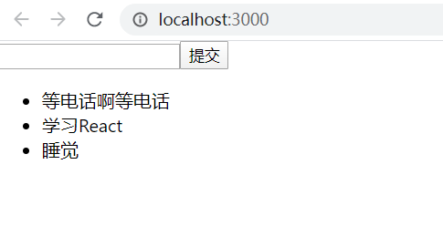

一、前言
最近开始学习React了，学过Vue以后，掌握React的写法并不是一件难事，最近会写系列文章更新自己在学习React过程的收获。
我个人是比较喜欢边学边做的。所以本篇文章由搭建项目开始，边实现简单的todolist边了解一些React的基本概念。(万物起源todolist)
二、使用脚手架搭建一个React项目
如同vue有官方提供的脚手架vue-cli之外，React官方也提供了脚手架工具create-react-app。
全局安装1
npm install -g create-react-app
创建项目1
create-react-app todo
在创建项目的时候，真的是花了特别久的时间，不过那个提示也说take a couple of minutes了，emmm，然后我去下了个淘宝镜像，速度才有所提升。
运行项目1
npm start
这里有一个小插曲，运行时报了错，查看是webpack版本问题，然后又去下载了指定版本的webpack，另外webpack4.x以上需要安装webpack-cli，而且现在webpack不是全局安装，我还没去深究原因，之后会去了解。
三、组件
src/index.js1
2//加载一个App文件，这个App就是一个组件
import App from './App'
src/App.js1
2
3
4
5
6
7
8
9
10
11
12
13import React , { Component } from 'react'
class App extends React.Component{
render(){
return{
<div>
Hello World!
</div>
}
}
}
export default App;
{ Component }等价于React.Component- 定义一个类
App，继承React.Component的类。当一个类继承了React.Component的类的时候，它就是一个组件了。 render函数返回什么，这个组件就展示什么内容。
src/index.js1
2
3
4
5import React from 'react';
import ReactDOM from 'react-dom';
import App from './App';
ReactDOM.render(<App />, document.getElementById('root'));
ReactDOM.render()在做什么？答：把一个组件挂载到一个DOM节点上。
假设HTML文件某处有一个div1
<div id = "root"></div>
想要将一个元素渲染到根DOM节点中1
2const element = <h1>Hello,world</h1>;
ReactDOM.render(element,document.getElementById('root');
在实践中，大多数React应用只会调用一次
ReactDOM.render()。
四、JSX
在上面的代码中，我们会看到一些奇怪的代码写法，例如:1
ReactDOM.render(<App />, document.getElementById('root'));
在React中，在JS写HTML标签，就是JSX语法。有几点要注意：
在JSX语法中，如果要使用自己创建的组件，组件开头必须用大写字母开头。
1
2
3//这种写法会报错
import app from './App'
ReactDOM.render(<app />, document.getElementById('root'));为了便于阅读，有时会将JSX拆分多行，官方建议将内容包裹在括号中。
虽然这样做不是强制要求的，但是这可以避免遇到自动插入分号陷阱。
1
2
3
4
5const element = (
<h1>
Hello,world!
</h1>
)
五、该动手写一个todo了
关于给DOM添加事件，列表渲染什么的就不提了，还是可以参阅官方文档，这里就直接上代码吧。相信写过一遍，就会对React的写法有一个简单的认识了。1
2
3
4
5
6
7
8
9
10
11
12
13
14
15
16
17
18
19
20
21
22
23
24
25
26
27
28
29
30
31
32
33
34
35
36
37
38
39
40
41
42
43
44
45
46
47
48
49
50
51
52
53
54
55
56
57
58
59
60
61
62
63import React, { Fragment } from 'react';
class App extends React.Component{
constructor(props){
super(props)
this.state = {
inputVal:'',
list:['等电话啊等电话','学习React','睡觉']
}
}
render(){
return(
<Fragment>
<div>
<input
value = {this.state.inputVal}
onChange = {this.handleInputChange.bind(this)}
/>
<button onClick = {this.handleBtnClick.bind(this)}>提交</button>
</div>
<ul>
{
this.state.list.map((item,index)=>{
return(
<li
onClick = {this.handleItemDelete.bind(this,index)}
key = {index}>
{item}
</li>
)
})
}
</ul>
</Fragment>
)
}
handleInputChange(e){
this.setState({
inputVal: e.target.value
})
}
handleBtnClick(){
this.setState({
list:[...this.state.list,this.state.inputVal],
inputVal:''
})
}
handleItemDelete(index){
const list = [...this.state.list];
list.splice(index,1);
this.setState({
list
})
}
}
export default App;
贴上实现图：

六、参考博客
这篇文章也是跟着别人的文章敲的，主要自己整理清楚了一些不懂的知识点，继续努力。